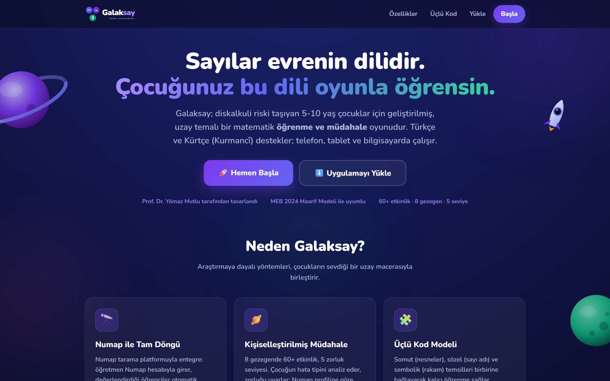
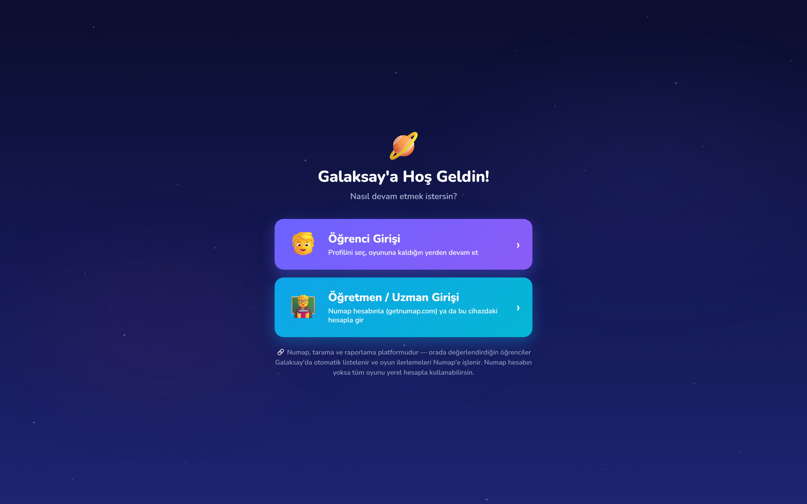
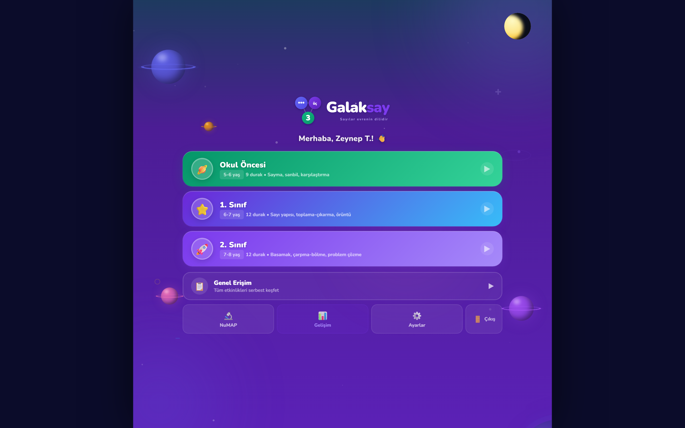
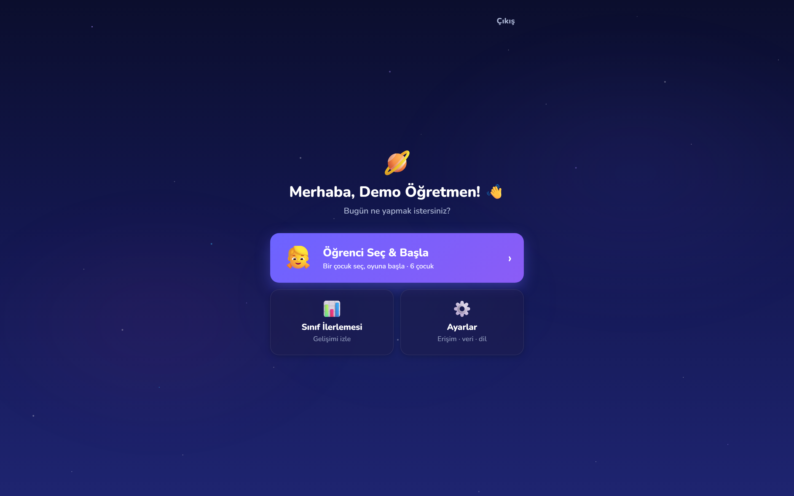
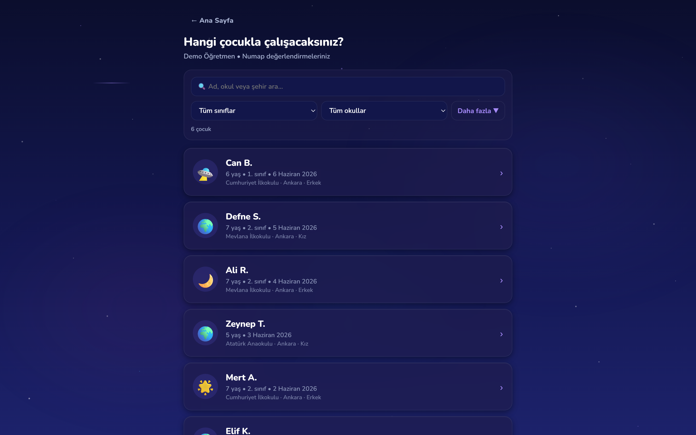
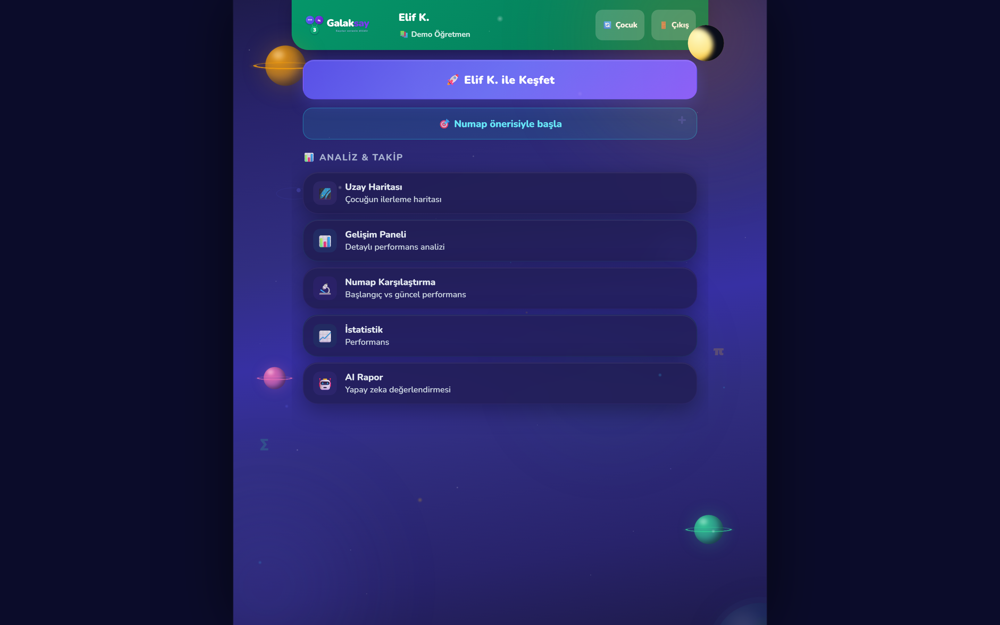

Diskalkuli odaklı, uzay temalı matematik öğrenme ve müdahale oyunu
5–10 yaş çocuklar için: üçlü kodlama modeline dayalı 60+ etkinlik, 8 gezegen, 5 gerçek zorluk seviyesi. Türkçe ve Kürtçe (Kurmancî) sesli destek; telefon, tablet ve bilgisayarda, çevrimdışı da çalışır.

60+ etkinlik8 gezegen
5 seviyegerçek zorluk rampası
TR + KUiki dilli seslendirme
PWAçevrimdışı çalışır
Tanıtım Kitapçığı · Haziran 2026
Prof. Dr. Yılmaz Mutlu tarafından tasarlanmıştır · galaksay.com
Bilimsel Temel
Oyun gibi görünür, müdahale gibi çalışır
Galaksay, diskalkuli riski taşıyan çocukların sayı hissini sistematik biçimde inşa eden bir müdahale aracıdır. Her etkinlik, alanyazındaki kanıt temelli ilkelerle kurgulanmıştır; uzay macerası bu pedagojinin çocuk diline çevirisidir.
🧩 Üçlü Kodlama Modeli
Dehaene'in modeli: her sayı somut (nesneler), sözel (sayı adı) ve sembolik (rakam) temsille birbirine bağlanır — logodaki üç gezegen bunu simgeler.
🪜 Somut → Görsel → Soyut
CRA sıralaması: manipülatiflerle başlar, görsel modellerden geçer, soyut rakama ulaşır. Temsil yoğunluğu seviyeye göre sadeleşir.
🎯 Sade ekran ilkesi
Bilişsel yük araştırmalarına dayalı "daha sade daha iyidir" tasarımı: ekranda tek fikir, az seçenek, tek dikkat vurgusu; metin yalnız okuyabilen çocuklara.
💬 Anında, yönlendirici dönüt
Doğruda kısa kutlama + sesli tekrar-sayım; yanlışta doğru cevabın öğretici gösterimi ve tek cümlelik strateji ipucu. Kıyas ve baskı yok.
Çocuğu koruyan tasarım kararları
İlk deneme kilitli (tanılayıcı doğruluk) — ama ipucu kullanmak puan düşürmez; 5 kademeli ipucu sistemi yardım istemeyi ödüllendirir.
Hız baskısı ana akışta yok; akıcılık çalışması ayrı ve isteğe bağlıdır.
Yanılgı tespiti: "1 eksik/fazla sayma" gibi tipik hata örüntüleri yakalanır ve çocuk diliyle düzeltilir.
Rozet/onay enflasyonu yok — içsel motivasyonu zedeleyen ödül kalabalığı bilinçli olarak budanmıştır.
MEB 2024 Maarif Modeli kazanımlarıyla eşlenmiş içerik.
Hedef kitle:okul öncesi – 4. sınıf (5-10 yaş); diskalkuli riski taşıyan, matematik öğrenme güçlüğü yaşayan ya da temel sayı hissini güçlendirmek istenen tüm çocuklar.
İçerik Evreni
8 gezegen, 60+ etkinlik
Her gezegen bir matematik alanını temsil eder; çocuk yaş grubuna göre kurgulanmış bir yörünge üzerinde duraktan durağa ilerler, görevleri tamamladıkça gezegen kristallerini toplar.
Gezegen
Alan
Örnek beceriler
🌍 Sayalon
Sayma
Birebir eşleme, ritmik/atlamalı sayma, geri sayma, kardinalite
⚡ Şimşeron
Şipşak sayılama
Bir bakışta miktar, beşli/onlu çerçeve, görsel bellek
Doğru cevapta kısa kutlama + taşları birlikte sayma (ses-görsel senkron)
Sorular sesli okunur; okul öncesi profillerde tüm akış metinsiz yürütülebilir.
Doğru cevapta yıldız taşları tek tek, sesle eş zamanlı sayılır — kardinalite pekişir.
Zorluk Sistemi
5 seviye, gerçek zorluk rampası
Zorluk yalnızca "daha büyük sayı" değildir: her seviye sayı aralığını tabandan ve tavandan ölçekler, çeldiricileri yakınlaştırır, görsel temsili kademeli soyutlaştırır ve flash sürelerini kısaltır.
🌱 1Başlangıç · 1-5
🌿 2Kolay · 1-10
🌳 3Orta · 6-15
⭐ 4Zor · 11-20
👑 5Usta · yapısal zorluk
Sınıf kalibrasyonu: 2. sınıf öğrencisi 1. seviyeden değil, sınıfına uygun seviyeden başlar; üst seviyeler %60 başarıyla açılır.
Numap profili: tarama sonucu riskli alanlarda oyun, uygun başlangıç seviyesini ve somut temsil desteğini otomatik seçer.
Mikro-adaptasyon: üst üste hatada zorluk bir kademe yumuşar; yüksek performansta alan genişler (%75 optimal başarı hedefi).
Serpiştirilmiş tekrar: yanlış yapılan sorular aralıklı olarak yeniden sorulur; her 4. soruda kardeş beceriden soru gelir.
Görev sonucu — yıldızlar, gezegen ilerlemesi ve "Seviye 2'ye Yüksel!" çağrısı
Kullanım & Erişilebilirlik
Her çocuğa, her cihazda
İki giriş kapısı
Öğrenci girişi: çocuk kendi profilini seçer, PIN'iyle girer, kaldığı yerden devam eder.
Öğretmen/Uzman girişi: Numap hesabıyla ya da cihazdaki yerel hesapla — Numap'siz okullar için tam yerel mod.
Yaş grubu ve hikâye tercihi çocuğa kalıcıdır; her girişte yeniden sorulmaz.
Erişilebilirlik
İki dilli sesli yönerge: Türkçe + Kurmancî
Disleksi-dostu yazı tipi (Atkinson Hyperlegible)
Renk körlüğü modları (desen destekli)
Azaltılmış hareket ve sakin mod
Büyük dokunma hedefleri (44-64px), klavye desteği
Teknik
Web uygulaması (PWA) — mağaza gerekmez, ana ekrana eklenir
Bir kez yüklenince çevrimdışı çalışır
Veriler varsayılan olarak cihazda; merkezi senkron öğretmen kontrolünde

Giriş — öğrenci ve öğretmen kapıları + Numap yön levhası

Yaş grubu seçimi — yörünge içeriği ve zorluk buna göre kurulur
Öğretmen & Uzman Tarafı
Sınıfın kontrol paneli

Öğretmen ana ekranı — öğrenci seç, sınıf ilerlemesi, ayarlar

Öğrenci listesi — arama ve süzgeçlerle (sınıf, okul, tarih)

Çocuğa özel pano — Oyna + analiz araçları
Uzay Haritası & Gelişim Paneli: kategori başarıları, eğilimler, seviye geçişleri
Bireysel PDF raporu: profesyonel düzen, gerçek Türkçe karakterler, öneri ve yönlendirme bölümleri
Sınıf Paneli: tüm sınıfın tek bakışta durumu; sınıf raporu ve CSV dışa aktarım
Numap Karşılaştırma: tarama profili ↔ güncel oyun performansı
Tarama → Müdahale → İzleme
Numap ile tam döngü
Galaksay, kardeş platform Numap (getnumap.com) ile bütünleşiktir: tarama sonucu oyunu kişiselleştirir, oyun verisi taramanın yanına döner. Böylece "müdahaleye yanıt" tek panelde izlenir.
1 · Numap'te tara
21 alt test, norm temelli risk haritası
→
2 · Galaksay'da oyna
Öğrenciler otomatik listelenir; oyun risk profiline göre başlar
→
3 · Numap'te izle
Oturum, başarı ve kategori ilerlemesi panelde
Tek öğretmen hesabı — Numap kimliği Galaksay'da geçerli; öğrenci verisi yeniden girilmez.
Oyun ilerlemesi (oturum, doğruluk, kategori, seviye geçişleri) merkezi havuza işlenir; çok-cihaz birleşik görünüm.
Numap zorunlu değildir: Galaksay yerel hesaplarla tek başına da eksiksiz çalışır.
Akademik altyapı:madde-düzey olay kaydı, ön-son karşılaştırma ve sınıf istatistikleri araştırma kullanımına uygundur (CSV/PDF).
Keşfe başlamaya hazır mısınız?
Tarayıcıda açın, ana ekrana ekleyin, oynamaya başlayın — kurulum yok, mağaza yok. Öğretmenseniz Numap hesabınızla girin; öğrencileriniz sizi bekliyor.